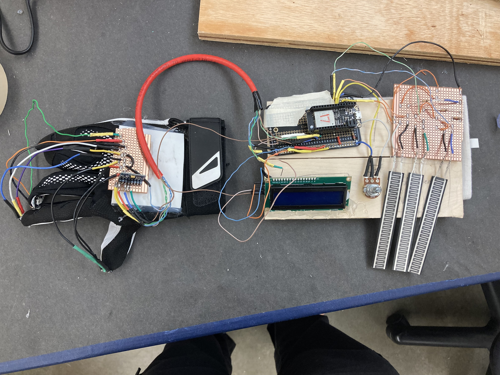

My project is a light painting tool that is intended to give the user an ability to adapt their painting on the fly. I wanted to expand upon the idea of the more literal understanding of the cyborg by making an interface that feels integrated to the body as a wearable. My inspiration for the project was artwork made by Dariustwin (a light painting artist), and media with cybernetics such as Cyberpunk, Ghost in the Shell and Star Wars.
My original concept was to design the interface with the arduino being placed on the head with the inputs and outputs located on seperate hands. I wanted the wiring and components to be visible in order to help communicate this concept to the viewer. I had to change the concept, because the long wires were causing voltage drop issues. As such, I had to adapt the idea in a way that retain the premise of the cyborg while downsizing the wiring. To resolve this issue I adapted my concept by leaning more into the premise of cybernetics associated with the idea of the cyborg. The result of this was to consolidate all of my components onto one arm. In doing so, I was able to retain the heart of my orginal premise while working within the boundries of the technology I was using.

NO pressure sensors being pressed
ALL pressure sensors being pressed
The piece generated more light than I thought it would. This is most likely due to the back light of teh LCD. As such, if I were to expland the project I would create a toggle to turn off the backlight of the LCD.